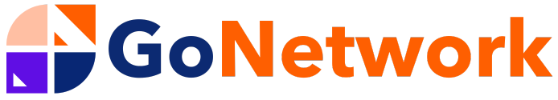
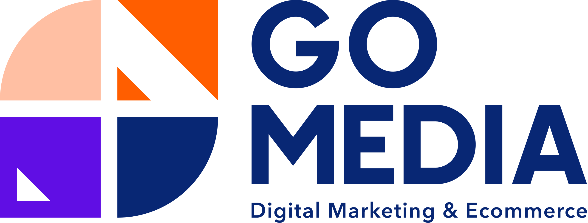

TÍN
Trọn Vẹn Chữ Tín
CHUẨN
Chuẩn Mực Bền Vững
TỐC
Tốc Độ & Bứt Phá
TIÊN
Tiên Phong Giải Pháp
NHÂN
Nhân Văn Làm Gốc
Kiến Tạo Nền Tảng Số,
Hiệu Quả Tối Đa & Chuẩn Bền Vững.
Gotek đồng hành cùng doanh nghiệp kiến tạo website độc bản, phát triển ứng dụng di động và hệ thống SaaS chịu tải cao — cam kết mượt mà 60FPS, bảo mật tuyệt đối và thúc đẩy chuyển đổi thực chất.
ĐỐI TÁC TRONG HỆ SINH THÁI
Cùng kết nối thương hiệu, mạng lưới và công nghệ.

THIẾT KẾ WEBSITE CHUYÊN NGHIỆP · TRỌN GÓI & CHUẨN SEO
Website bắt đầu từ cấu trúc, không bắt đầu từ trang trí — Nội dung trước giao diện là triết lý cốt lõi tại Gotek.
Chúng tôi làm rõ mục tiêu kinh doanh, nhóm khách hàng và hành trình trải nghiệm người dùng trước khi thiết kế. Mỗi website bàn giao bởi GOTEK là một tác phẩm độc bản, tối ưu Core Web Vitals tuyệt đối, chuẩn SEO từ lõi và cam kết đồng hành kỹ thuật dài hạn.
10+
Năm kinh nghiệm
thực chiến
thực chiến
1000+
Dự án website
hoàn thành
hoàn thành
24/7
Hỗ trợ kỹ thuật
trọn đời
trọn đời
Giải Pháp Thiết Kế Website
Hệ thống website độc bản, chuẩn SEO và tối ưu chuyển đổi giúp doanh nghiệp bứt phá doanh thu.
Thiết Kế UI/UX Độc Bản
Không dùng giao diện mẫu có sẵn. Mỗi website là một tác phẩm sáng tạo riêng biệt, chuẩn UX/UI tôn vinh bản sắc thương hiệu.
Tối Ưu Hóa SEO Từ Lõi
Cấu trúc code sạch, HTML ngữ nghĩa và Schema đầy đủ ngay từ khởi đầu giúp website dễ dàng leo top Google.
Tương Thích Hoàn Hảo Di Động
Hiển thị mượt mà trên mọi thiết bị di động, tablet và desktop với trải nghiệm đồng nhất và trực quan.
Tối Ưu Tỷ Lệ Chuyển Đổi (CRO)
Bố cục được nghiên cứu kỹ lưỡng để dẫn dắt người dùng thực hiện hành động liên hệ và mua hàng.
Tốc Độ Tải Trang Siêu Tốc
Next.js, React kết hợp Redis Caching tối ưu Core Web Vitals xanh tuyệt đối, tăng điểm xếp hạng SEO.
Bảo Mật Cao & Dễ Quản Trị
Trang bị SSL, tường lửa WAF và hệ thống CMS thân thiện giúp dễ dàng cập nhật nội dung mà không cần code.
Bảo Hành & Đồng Hành Dài Hạn
Hỗ trợ kỹ thuật 24/7, giám sát server và cam kết bảo trì định kỳ cho mọi sản phẩm website sau bàn giao.
Dự Án Tiêu Biểu Đã Triển Khai
Những sản phẩm số tinh hoa được Gotek thiết kế và phát triển độc bản, mang lại giá trị đo lường được cho các doanh nghiệp đối tác.
Bảng Báo Giá Dịch Vụ
Lựa chọn gói dịch vụ phù hợp với quy mô và tham vọng công nghệ của doanh nghiệp bạn.
Quy Trình Triển Khai Website Tại Gotek
Chúng tôi không chỉ làm website "cho có", mà xây dựng một hệ thống kinh doanh và vận hành tự động thực sự qua 6 cột mốc chuyên sâu.
1.
Phân Tích Mục Tiêu & Lõi Kinh Doanh
Làm rõ mục tiêu bán hàng, SEO hoặc lead gen; phân tích phễu chuyển đổi và hoạch định hạ tầng VPS/CDN/Cache.
3.
Thiết Kế UI/UX Độc Bản & Prototype
Thiết kế giao diện độc bản dựa trên hành vi khách hàng (UX-driven), mapping rõ luồng chuyển đổi và demo tương tác Figma.
5.
Kiểm Thử Đa Thiết Bị & Automation
Kiểm tra chức năng trên thiết bị thật, kích hoạt bảo mật SSL/Firewall, cài đặt tracking chuyển đổi và automation.
2.
Thiết Kế Kiến Trúc & Cấu Trúc SEO
Chọn Stack tối ưu (WordPress / Next.js / Laravel), thiết kế cơ sở dữ liệu, URL chuẩn SEO và logic nội dung bài bản.
4.
Lập Trình Chuẩn SEO & Tốc Độ 60FPS
Code sạch chuẩn W3C, responsive hoàn hảo mọi thiết bị, tối ưu Core Web Vitals tuyệt đối và cấu hình cache đa tầng.
6.
Bàn Giao Toàn Diện & Bảo Hành 24/7
Chuyển giao 100% full source code và server, hướng dẫn quản trị nội dung dễ dàng cùng cam kết hỗ trợ kỹ thuật trọn đời.
Khách Hàng Nói Gì Về Gotek
Một Hệ Sinh Thái.
Ba Đội Ngũ, Ba Phần Việc.
Doanh nghiệp có thể bắt đầu từ một nhu cầu cụ thể rồi kết nối thêm năng lực phù hợp khi dự án cần mở rộng.

Xây dựng thương hiệu & tạo nhu cầu thị trường
Go Media chuyển mục tiêu kinh doanh thành định hướng thương hiệu, kế hoạch nội dung và hoạt động thương mại điện tử nhất quán trên các kênh.
Từ bộ nhận diện số đến các chiến dịch truyền thông đa kênh, từng điểm chạm đều được thiết kế bài bản nhằm khơi dậy nhu cầu thực tế của khách hàng, tạo lập vị thế vững chắc và mở rộng thị trường.

Kết nối thương hiệu với đúng mạng lưới tiếng nói
GoNetwork đưa kế hoạch vào mạng lưới nhà sáng tạo, KOL/KOC: làm rõ đối tượng, phạm vi, lịch triển khai và đầu mối phối hợp bài bản.
Thay vì quảng bá một chiều, thương hiệu tiếp cận người tiêu dùng thông qua những câu chuyện chân thực và gần gũi, giúp thông điệp lan tỏa tự nhiên với tỷ lệ tương tác và chuyển đổi cao nhất.
Biến chiến lược thành hệ thống vận hành thực tế
Gotek xây website, phần mềm, hạ tầng và tự động hóa để dữ liệu, quy trình cùng trải nghiệm số có thể vận hành, theo dõi và mở rộng không giới hạn.
Mọi điểm chạm từ tiếp thị và mạng lưới đối tác đều được Gotek kết nối liền mạch vào hệ thống dữ liệu tập trung, giúp doanh nghiệp kiểm soát toàn diện và sẵn sàng bứt phá tăng trưởng.
Câu Hỏi Thường Gặp
Giải đáp những thắc mắc phổ biến nhất để bạn hoàn toàn an tâm khi lựa chọn Gotek làm đối tác công nghệ chiến lược.